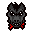
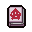
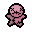
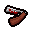
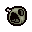
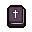
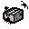

Objetos
Objetos| ID | Nombre | Icono | Frase | Descripción | Calidad |
|---|---|---|---|---|---|
| 1 | Un Pony |  |
Vuela y dashea |
Otorga a Isaac vuelo y velocidad de manera pasiva. Cuando se usa, Isaac carga en una dirección a gran velocidad, siendo invulnerable durante la carga y efectuando daño a los enemigos golpeados. |
2 |
| 2 | Libro Anarquista |  |
Genera bombas |
Genera seis bombas troll por la sala. |
1 |
| 3 | Mejores amigos |  |
Amigos hasta el final |
Genera un Isaac de señuelo que explota a los 5 segundos. Los enemigos siempre atacarán al señuelo ignorando a Isaac. |
1 |
| 4 | Carta Blanca | Carta mímica |
Copia el efecto de la carta o runa que sostiene Isaac en el momento. |
2 | |
| 5 | Derechos de Sangre |  |
Daño enemigo en masa por un coste |
Al usarse hace 40 de daño a los enemigos a cambio de 1 corazón. Al usarse varias veces en la misma habitación solo consumirá corazón. |
0 |
| 6 | Cabeza Podrida de Bob |  |
Bomba lanzable reutilizable |
Al usarse, Isaac sostiene una bomba venenosa la cual puede lanzar en la dirección en la que mira. |
1 |
| 7 | Libro de las Revelaciones |  |
Protección del alma reutilizable |
Incrementa la posibilidad de aparición de la sala del Ángel / Diáblo mientras se sostenga. Al usarlo suelta un corazón de Álma y reemplaza el jefe del piso por un jinete si es posible. |
3 |
| 8 | Libro de los Secretos | Tomo del conocimiento |
Proporciona el efecto de Mapa del Tesoro, El Compás o del Mapa Azul durante el piso actual. |
1 | |
| 9 | Libro de las Sombras |  |
Invencibilidad temporal |
Crea un escudo que mitiga cualquier tipo de daño en la habitación actual durante 10 segundos. |
3 |
| 10 | Caja de Arañas |  |
Es una caja de arañas |
Genera 1-4 arñas azules que hacen 2.5x del daño de Isaac. |
1 |